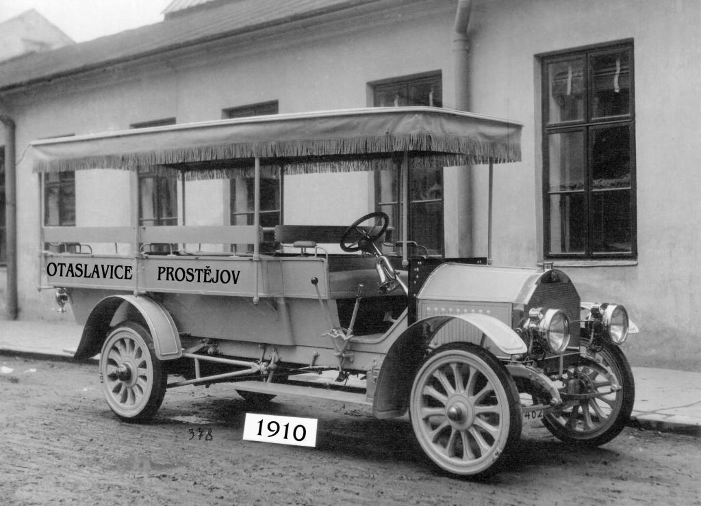
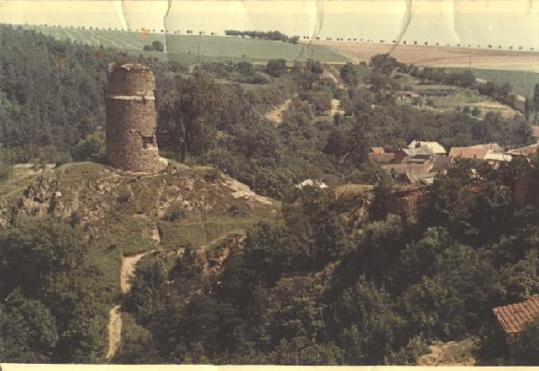
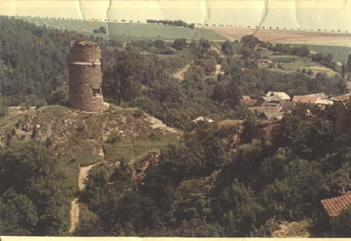

Dokumenty
Ke stažení najdete základní dokumenty spolku:
Aktuality
Aktuální informace o dění v obci Otaslavice související s historií.
- Leden 2026
Schválený rozpočet obce na rok 2025 a střednědobý výhled (podpora kulturních a historických aktivit). - Prosinec 2025
Uzavření pošty v Otaslavicích. - Celý rok 2025
Činnost Klubu vojenské historie a spolku Otava. - Probíhající
Muzeum řemesel a naučná stezka Předinou za poznáním.
Archiv fotografií – Rok 2024

Archiv fotografií – Rok 2025
 

Archiv fotografií – Rok 2026
Archiv zatím prázdný – průběžně doplňujeme.
Kontakt
Sídlo spolku:
Otaslavice 149, 798 06 Otaslavice
Kontaktní osoba:
Jana Halozková
Telefon:
608 123 123
E-mail:
jana@seznam.cz